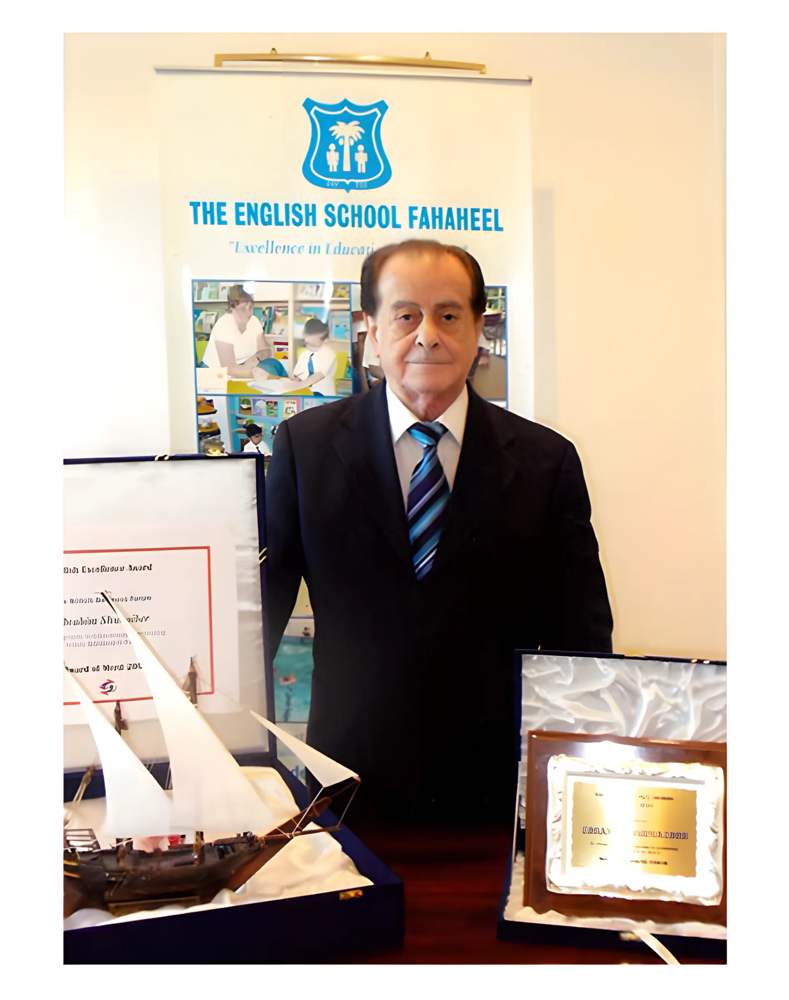
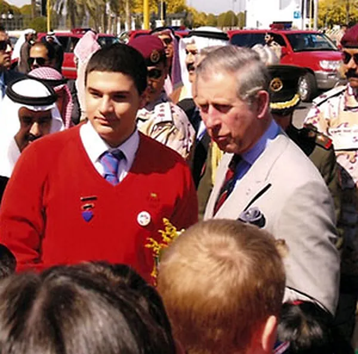

About ESF
The English School Fahaheel has served the expat community here since 1968. Our aim is to give every pupil the very best in British education, in a supportive and caring school.
Working closely with parents and the community, we help students reach their full potential and become independent, self-sufficient adults who will succeed in, and contribute to, a global society.

Early days
A group of expatriate parents founded the school in 1968, under the guidance of the British Consul of the time.
The Private Education Department of the Ministry of Education recognised it that same year, and it opened to a handful of expatriate students. There was no other English-language school in South Kuwait, apart from the Kuwait Oil Company school in Ahmadi, which closed in 1970.
A block of classrooms and an Assembly Hall were then built, so places could be offered to Kuwait Oil Company children from September 1970. As the English-speaking community grew, an upper storey was added in 1978.
In 1990 the occupying Iraqi army used the school as a command centre and looted everything of value. After liberation in 1991, the owner, Mr. Ibrahim Shuhaiber M.Sc., was determined to see it thrive again. British Army forces helped clear mines and ammunition from the area and the beach, and ESF soon regained its place as one of Kuwait’s leading English schools. In January 2005 it moved to its new, purpose-built premises in Mangaf.
The English School Fahaheel meets or exceeds all of the criteria laid down by the Kuwait Ministry of Education for the inspection of schools which offer a British Curriculum.Overall evaluation, inspection of May 2013 by Mr. Terry McDermott, Ofsted Additional Inspector
The report points to “the significant success of ESF pupils and students in external examinations, and their personal development as polite, confident and articulate young citizens of the world.”

The owner and Chairman
Mr. Ibrahim Shuhaiber rebuilt the school after 1991 and planned the Mangaf premises with the security of students in mind.
The British Business Forum in Kuwait presented him with an award of Merit for supporting British education in Kuwait. The award was presented at the Forum’s Excellence Awards by His Excellency the British Ambassador to Kuwait, Mr. Laing, and Mrs. Laing.

A royal visit
ESF students met HRH Prince Charles, Prince of Wales, and the Duchess of Cornwall during their visit to Kuwait.
The Prince asked the students where they were from and about their studies at Kuwait’s oldest English school, and complimented them on their smart English school uniform. Our thanks to the British Embassy for the opportunity.
Philosophy and aims
Our philosophy rests on three principles: discipline, continuous development and high academic standards. We respect discipline and courtesy, and we do not lower these standards to court popularity.
We aim to enable our students:
- To develop self-awareness, a positive self-image and the confidence to make the most of their own talents.
- To develop lively, enquiring minds, the ability to question and reason, and to solve problems imaginatively.
- To work confidently and sensitively with other students.
- To gain the knowledge, skills and understanding needed for adult life.
- To respect and tolerate other races, religions and ways of life.
- To understand the social, economic, political, scientific and technological issues we face, and how people and nations depend on each other.
- To look after their own health and physical development.
- To understand the environment and environmental issues.
School life
The courtesy of ESF staff and students is known throughout Kuwait, and it is the standard we expect in every department.
- The ESF Merit Scheme
- Recognition for reaching new targets, good work, good behaviour, self-discipline and independence, for Lower, Middle and Upper School. Winners choose their own reward from gifts and vouchers given by the scheme’s sponsors.
- Code of conduct
- Children are encouraged to achieve their best in work, attitude and personal behaviour. Good effort is rewarded, from written praise in workbooks to certificates.
- Environmental care
- Recycling, “Roots and Shoots” with the Jane Goodall Institute, Earth Week, beach clean-ups and environmental quizzes. All ESF bags are recyclable, with recycling bins throughout the school.
- In the community
- An annual Charity Fayre and support for Great Ormond Street Hospital Children’s Charity, the Kuwait Society for the Handicapped, the Kuwait Red Crescent Society, United Nations and animal welfare charities.